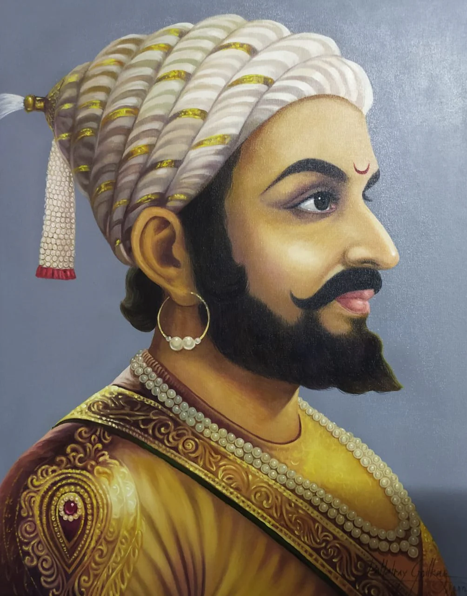

THE MARATHA EMPERIOR

CHATRAPATI SHIVAJI MAHARAJ (Shivaji Shahaji Bhonsale, Marathi pronunciation: [ʃiˈʋaːdʑiː
ˈbʱos(ə)le]; c.19 February 1630 –
April 1680)[6] was an Indian ruler and a member of theBhonsle dynasty .[7] Shivaji carved out his
own
independent kingdom from the Sultanate of Bijapur that formed the genesis of the Maratha
Confederacy. Shivaji I
was the founder of the Maratha Empire which later become the Maratha Confederacy.
Shivaji offered passage and his service to the Mughal emperor Aurangzeb to invade the declining
Sultanate of
Bijapur.
After Aurangzeb's departure for the north due to a war of succession, Shivaji conquered
territories
ceded by Bijapur in the name of the Mughals.[8]: 63
Following his defeat at the hands of
Jai Singh I in the
Battle of Purandar, Shivaji entered into vassalage with the Mughal empire, assuming the role of a Mughal chief
and was conferred with the title ofRaja by Aurangzeb.
[9] He undertook military expeditions on behalf
of the
Mughal empire for a brief duration.[10] Over the course of his life, Shivaji engaged in both alliances and
hostilities with the Mughal Empire, the Sultanate of Golconda, the Sultanate of Bijapur and the
European colonial powers.
In 1674, Shivaji was coronated as the king despite opposition from local Brahmins.[8]: 87 [11] Praised for
his
chivalrous treatment of women,[12] Shivaji employed people of all castes and religions, including Muslims[13]
and Europeans,
in his administration and armed forces.[14] Shivaji's military forces expanded the
Maratha sphere
of influence, capturing and building forts, and forming a Maratha navy.
Shivaji's legacy was revived by Jyotirao Phule about two centuries after his death. Later on, he
came to be
glorified by Indian nationalists such as Bal Gangadhar Tilak, and appropriated by Hindutva
activists.[15][16][17][18][19]
Ancestry
Ancestors of Shivaji
Shivneri Fort
Conflict with Bijapur Sultanate
Background and context
In 1636, the Sultanate of Bijapur invaded the kingdoms to its south.[7] The sultanate had recently become a
tributary state of the Mughal Empire.[7][36] It was being helped by Shahaji, who at the time was a chieftain in
the Maratha uplands of western India. Shahaji was looking for opportunities of rewards of jagir land in the
conquered territories, the taxes on which he could collect as an annuity.[7]
Shahaji was a rebel from brief Mughal service. Shahaji's campaigns against the Mughals, supported by the Bijapur
government, were generally unsuccessful. He was constantly pursued by the Mughal army, and Shivaji and his
mother Jijabai had to move from fort to fort.[37]

Young Shivaji (right) meets his father Shahaji. (left)
In 1636, Shahaji joined in the service of Bijapur and obtained Poona as a grant. Shahaji, being deployed in
Bangalore by the Bijapuri ruler Adilshah, appointed Dadoji Kondadeo as Poona's administrator. Shivaji and
Jijabai settled in Poona.[38] Kondadeo died in 1647 and Shivaji took over its administration. One of his first
acts directly challenged the Bijapuri government.[39]
Independent generalship
In 1646, 16-year-old Shivaji captured the Torna Fort through stratagem or bribery,[8]: 61 taking
advantage of
the confusion prevailing in the Bijapur court due to the illness of Sultan Mohammed Adil Shah, and seized the
large treasure he found there.[40][41] In the following two years, Shivaji took several important forts near
Pune, including Purandar, Kondhana, and Chakan.
He also brought areas east of Pune around Supa, Baramati, and
Indapur under his direct control. He used the treasure found at Torna to build a new fort named Rajgad. That
fort served as the seat of his government for over a decade.[40]
After this, Shivaji turned west to
the Konkan
and took possession of the important town of Kalyan. The Bijapur government took note of these happenings and
sought to take action. On 25 July 1648, Shahaji was imprisoned by a fellow Maratha sardar called Baji Ghorpade,
under the orders of the Bijapur government, in a bid to contain Shivaji.[42]
 -wikipedia
-wikipedia